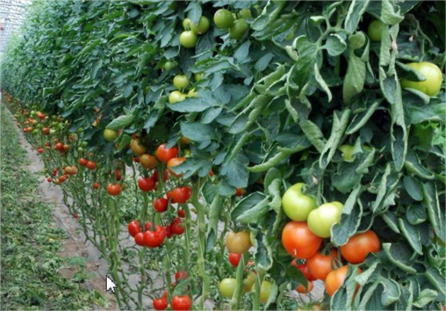

Reussir la culture des tomates
Gorgées de sucres et de soleil, les tomates cueillies à point sont
savoureuses. Très nombreuses, elles s’utilisent en cuisine
diversement selon leur qualité : juteuses, charnues, sans pépins,
les plus grosses se farcissent, les petites se laissent croquer à
l’apéritif.
Comment s'y prendre ?
Dès février :
- Démarrer les semis sous abri pour les variétés précoces.
- Semer en terrines, à 20 °C. Un mois plus tard, repiquer en
godets les plus beaux plants.
-Au stade deux ou trois feuilles, en avril, repiquer les jeunes
plants. Dans le même temps, enrichir avec un amendement
l'emplacement qui accueillera les tomates.

-
La tomate est l’un des fruit-légumes les plus consommés mais
aussi les plus cultivés dans nos potagers.
On doit considérer que la tomate ne pourra être plantée en
extérieur qu’à partir du 15 mai et qu’il est donc inutile de
commencer à semer trop tôt. Dans le cas d’un semis de
tomates, le semis de tomate doit commencer à la fin de
l’hiver, vers la mi-mars, sous abri, et à température d’au
moins 18-20°. Si vous n’êtes pas équipé pour le semis ou que
vous démarrez pour la première fois la culture des tomates,
commencez par planter des petits plants achetés en
jardinerie.
-
Salade de tomate
Une fois récoltées en été, nous vous conseillons une belle
salade de tomates. Bien rouges, bien juteuses, avec une petite
vinaigrette.